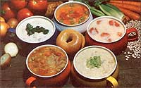

Hearty, inexpensive homemade soup is an ideal dish to fill up (and cheer up!) your family and friends on a cold day. Better yet, the following recipes which my mother - often served during the winters of my Minnesota childhood - can be prepared for just a dollar or so, and the thick, nutritious, one-dish meals will satisfy five or six very hungry teenagers or adults!
Put 5 or 6 medium diced potatoes, 1 large diced onion, and 1 or 2 stalks of chopped celery in a large kettle. Add just enough water to cover the vegetables and cook 'em until they're barely soft enough to pierce with a fork.
Next, melt 1/2 cup of margarine or butter (over low heat) in a saucepan and add 3/4 cup of whole wheat flour, 1 1/2 teaspoons of salt and pepper to taste. Stir the mixture until it's smooth and thick (just a few strokes), then add 6 cups of milk - a little at a time - and continue to heat the sauce, mixing constantly, until it's fairly thick and hot. (A wire whisk really helps keep the lumps out.) Now pour this mixture into the large kettle, with the vegetables and water, and bring the soup-to-be to a boil.
In the meantime, prepare the dumplings. Simply cream 2 tablespoons of butter or margarine with 2 eggs, then stir in 6 tablespoons of whole wheat flour and 1/4 teaspoon of salt.
When the soup begins to boil, spoon in the dumpling batter, cover the kettle, and let the flavors mingle at a simmer for 8 to 10 minutes.
If you'd like to make a "lighter" soup (with more dumplings than the potato recipe calls for), put 3 cups of water or meat broth in your soup kettle with 2 medium onions (chopped), 2 or 3 diced celery stalks, 2 sliced carrots and 1 pint of tomatoes. (You can also add two diced potatoes, or a cup or so of any of your other favorite fresh or frozen vegetables, if you like.) Cook until the firmest ingredients are barely tender.
Next, melt 1/2 cup of margarine or butter in a small saucepan. Add 1/2 cup of whole wheat flour and stir the mixture until it forms a smooth paste. Season with salt and pepper. Stir the flour-butter mix into the kettle of boiling vegetables, and cook the soup until it thickens and the vegetables reach a "done" texture.
To make the parsley dumplings, sift together 2 cups of whole wheat flour, 3 teaspoons of baking soda and 1 teaspoon of salt. Cut in 1/4 cup of minced parsley and 1/4 cup of shortening until the mixture resembles a coarse meal. Next, mix 1 slightly beaten egg with 3/4 cup of milk, then blend this liquid into the flour mixture until all the dry ingredients are dampened. Finally, drop the dumpling batter, a spoonful at a time, on top of the boiling soup. Cover the kettle, and simmer the dinner treat for 12 minutes before serving.
Here's a soup that'll satisfy a horde of cold and hungry troops! (However, since the recipe begins with dried beans, you'll have to start this meal the night before you plan to serve it.)
Pour 1 pound of navy beans into a kettle, add 1/2 teaspoon of baking soda, fill the kettle with 2 or 3 quarts of water, and let it sit for about 12 hours before cookin' the beans (in their soaking water to save all the nutrients) at low heat.
Most people simmer fresh or smoked pork along with navy beans (hickory smoked chicken is really good in this soup, too!), but if meat isn't in your diet - try adding 2 diced potatoes, 1 pint to 1 quart of tomatoes, 1 diced onion, 2 or 3 stalks of celery, and 2 or 3 sliced carrots.
Then add any seasoning you like (Tabasco sauce is nice). Just remember that beans take a lot longer to cook than do most other vegetables, so let 'em simmer for a couple of hours before you add the quicker-cooking ingredients.
Although this soup is easy to prepare, it's quite a bit lighter and not as filling as are the other recipes I've presented - which makes it "just right" for a lunch or supper when everyone's a shade less than ravenous.
All you have to do is heat 1 quart of tomatoes in a kettle or large saucepan until they're very hot. At that point add 1 quart of milk and 2/3 teaspoon of baking soda, and heat the mixture again (but don't let it come to a boil). Season the soup with salt, pepper, and - if you like - celery, salt and chives.
That's all there is to it! It's just as easy to make as canned tomato soup - and, of course, a whole lot tastier than the store-bought product!
Another of our favorite soups is often on late summer menus here in Minnesota, since that's when our cauliflower ripens. (You can also use frozen cauliflower, from the supermarket or from your own stockpile of preserved garden produce.)
To make this delicacy, just break a cauliflower head into bite-size chunks, and place the bits in a soup kettle with 2 to 3 stalks of sliced celery (no onions this time, they'd overpower the delicate cauliflower flavor). Add enough water to cover the ingredients and cook over medium heat until the vegetables are barely tender.
Then - using 1/2 cup of butter, 3/4 cup of whole wheat flour, 6 cups of milk, 1 1/2 teaspoons of salt, and pepper to taste - make a white sauce exactly like that described in the potato soup recipe, and add it along with 1/4 cup of chives to the kettle. Serve the soup piping hot.
(For a truly rich dish, drop in some dollops of cream cheese and let them melt into the soup just before you serve it.)
All of my mom's soup recipes can be personalized. You could, for instance, make 'em thicker or thinner, with or without dumplings, and with fewer or more ingredients. I've simply told you the way three generations of my family like 'em best.
Editor's Note: Mother's recipe tester/taster, Jane McKay, whipped up all five of Kay Vaughter's winter sows, and she - as well as a passel of "volunteer" evaluators - rated the dishes satisfying and very tasty. All in all, it'd be hard to imagine any better, or less expensive, ways to "warm up" a winter's meal!
|
 MOTHER EARTH NEWS STAFF Try any of these simple, tasty soups for a warm and inexpensive winter meal. |
|
|